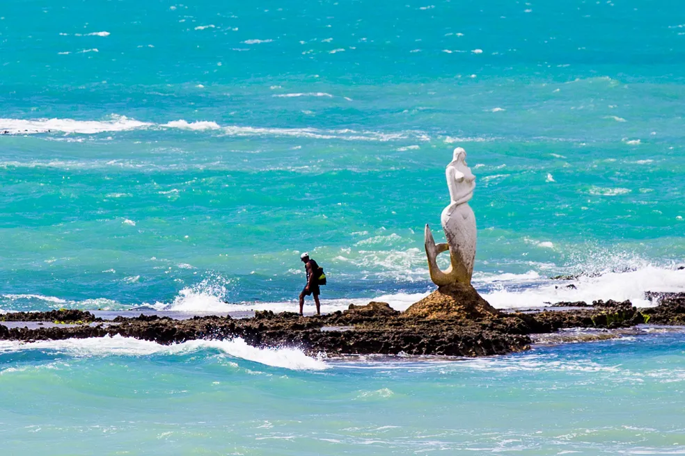
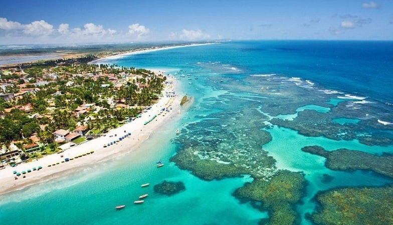
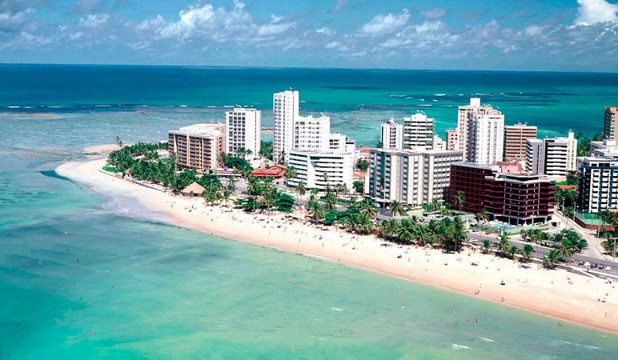

O que saber antes de ir?
Maceió, capital do estado de Alagoas, localizada na região Nordeste do Brasil, é um verdadeiro refúgio tropical.
Famosa por seu litoral de águas transparentes e tons de azul impressionantes, a cidade combina belezas naturais com uma cultura rica e envolvente.
Desde sua fundação, em 1815, Maceió tem se destacado como um dos principais destinos turísticos do país, recebendo viajantes de todas as partes do mundo.
O charme da cidade vai além das paisagens. Seu centro urbano revela um interessante contraste entre o estilo colonial de prédios
históricos e a modernidade de suas avenidas movimentadas, repletas de lojas, bares e restaurantes.
Essa fusão entre o antigo e o novo dá à cidade um ar único e acolhedor.
A culinária local é outro atrativo que conquista os visitantes. Com forte influência litorânea, os pratos são, em sua maioria,
à base de frutos do mar — como sururu, camarão, peixe e mariscos — sempre bem temperados e cheios de sabor.
As festas tradicionais, como o animado carnaval e o festejo de São Gonçalo do Amarante, revelam a alma alegre e festiva do povo alagoano.
Com clima quente durante todo o ano, praias encantadoras como Pajuçara, Ponta Verde e Ipioca, e um povo simpático e receptivo,
Maceió é o destino ideal para quem busca relaxar, curtir a natureza e vivenciar uma cultura rica e autêntica.
Atrações
- Praia da Sereira
- Maragogi
- Orla/Praia de Ponta Verde
Praia da Sereia
A Praia da Sereia é uma das mais encantadoras e tranquilas de Maceió,
localizada no bairro de Ponta Verde, a poucos quilômetros do centro da capital alagoana.
Com seu mar calmo e beleza cênica, a praia é ideal para famílias, banhistas e para quem busca um lugar agradável para relaxar à beira-mar.
A praia é conhecida pela sua formação de recifes que criam uma espécie de piscina natural durante a maré baixa,
proporcionando águas rasas e cristalinas, perfeitas para um banho seguro e relaxante.
É uma ótima opção para crianças e também para quem gosta de nadar com tranquilidade.
Quando a maré sobe, o mar ganha um pouco mais de movimento, mas ainda assim permanece convidativo.
Um dos grandes atrativos da Praia da Sereia é a estátua da sereia que dá nome ao local, posicionada sobre uma pedra à beira-mar —
um símbolo que chama atenção de moradores e turistas e rende ótimas fotos.
A paisagem é complementada por coqueiros e uma faixa de areia clara, criando um ambiente acolhedor e agradável.
A região conta com uma estrutura simples, mas suficiente para atender aos visitantes, com barracas e quiosques que servem petiscos, bebidas e pratos típicos.
É um lugar muito frequentado pelos moradores locais, o que contribui para um clima mais tranquilo e familiar.
A Praia da Sereia é uma excelente escolha para quem quer aproveitar um dia de descanso em um cenário bonito e sossegado,
com fácil acesso e um mar calmo que encanta pela transparência e serenidade.
Maragogi
A Praia de Maragogi é um dos destinos mais famosos e encantadores do litoral de Alagoas,
situada a cerca de 130 km ao norte de Maceió, no município de Maragogi.
Conhecida por suas águas cristalinas e piscinas naturais, chamadas de galés, a praia é um verdadeiro paraíso
para quem busca beleza natural e contato com o mar.
A principal característica da Praia de Maragogi são suas impressionantes piscinas naturais formadas na maré baixa,
que revelam corais coloridos e uma vida marinha vibrante.
Esse espetáculo natural atrai visitantes de todo o Brasil e do mundo,
sendo ideal para mergulho com snorkel e para observar peixes tropicais em um cenário de tirar o fôlego.
A praia é perfeita para quem deseja aproveitar um ambiente paradisíaco com boa infraestrutura.
Diferente de outras praias mais isoladas, Maragogi conta com diversas opções de bares, restaurantes e pousadas,
oferecendo conforto sem perder o charme rústico da região.
Além das piscinas naturais, outro grande atrativo de Maragogi são os passeios de catamarã, que levam os visitantes até os recifes.
Também é possível explorar a costa em trilhas, passeios de buggy ou de bicicleta, admirando a vegetação nativa,
coqueirais e o azul hipnotizante do mar.
A Praia de Maragogi é, sem dúvida, um destino imperdível para quem deseja conhecer um dos pontos mais deslumbrantes do litoral nordestino,
com uma combinação única de beleza natural, infraestrutura e experiências inesquecíveis.
Orla de Ponta Verde
A Orla de Ponta Verde é uma das áreas mais icônicas e movimentadas de Maceió, famosa por sua beleza natural,
infraestrutura de qualidade e opções de lazer para todos os gostos. Localizada no coração da cidade, essa
orla é um dos principais cartões-postais de Maceió e um ponto de encontro tanto para turistas quanto para os
moradores locais.
A orla é marcada por uma extensa faixa de areia branca, que se estende ao longo da costa e é banhada por
águas claras e tranquilas, ideais para um banho de mar relaxante. Uma das características que tornam a Orla
de Ponta Verde tão atrativa é a vista panorâmica do Mar de Maceió, com suas tonalidades esverdeadas, e a
proximidade de várias atrações turísticas, como a Praia de Pajuçara e o Mirante São Gonçalo do Amarante, de
onde se pode ter uma vista privilegiada da região.
Ao longo da orla, os visitantes encontram uma excelente infraestrutura, com quiosques e barracas de praia
que oferecem pratos típicos da culinária alagoana, como frutos do mar frescos e a tradicional tapioca. Além
disso, a região conta com uma ciclovia, facilitando o acesso para aqueles que preferem pedalar ou caminhar,
e uma avenida bem estruturada, com muitos bares, restaurantes e lojas, tornando o local um centro de
convivência e diversão.
A Orla de Ponta Verde também é palco de diversas atividades culturais e esportivas, como eventos musicais e
festivais, que acontecem ao longo do ano, atraindo tanto os turistas quanto a população local. A paisagem da
orla é ainda mais encantadora ao pôr do sol, quando o céu se tinge de cores vibrantes e oferece um
espetáculo à parte.
Com um ambiente acolhedor e uma combinação de beleza natural e infraestrutura moderna, a Orla de Ponta Verde
é um dos lugares mais agradáveis para relaxar, se divertir ou simplesmente apreciar a vista em Maceió.